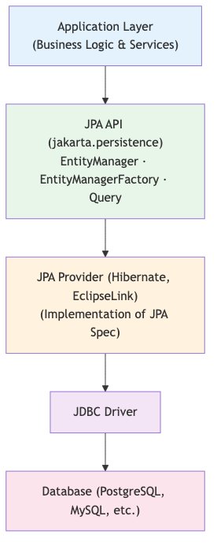
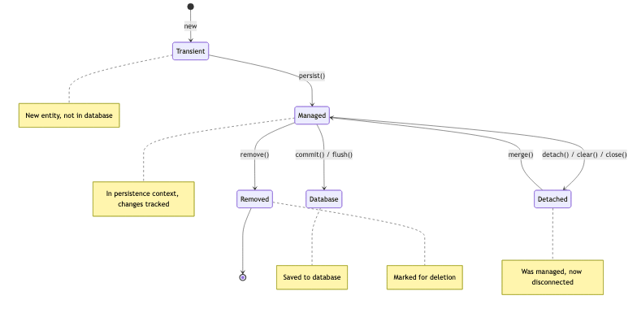
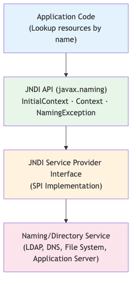

Contenu du cours
Toutes les sections — cliquez sur un titre pour développer.
🗄️ Qu'est-ce que JPA / ORM ?
ORM (Object-Relational Mapping) mappe automatiquement les objets Java en tables SQL, éliminant le code JDBC répétitif et les conversions manuelles.

Avantages de l'ORM avec JPA :
- Portabilité — changer de base de données sans modifier le code métier
- Productivité — moins de code boilerplate, focus sur la logique
- Maintenabilité — modèle objet cohérent, pas de duplication SQL/Java
- Sécurité — requêtes paramétrées par défaut, protection contre les injections SQL
- Cache — cache de premier et second niveau pour les performances
JPA (Jakarta Persistence API) est la spécification standard — Hibernate, EclipseLink et OpenJPA en sont les implémentations.
🏷️ Annotations JPA de base
Annotations essentielles :
@Entity— déclare la classe comme entité persistante JPA@Table(name="...")— spécifie le nom de la table SQL correspondante@Id— désigne le champ clé primaire@GeneratedValue— stratégie de génération de la clé primaire :AUTO— le provider choisit la stratégieIDENTITY— colonne auto-increment (PostgreSQL, MySQL)SEQUENCE— séquence base de données (PostgreSQL, Oracle)TABLE— table dédiée à la génération d'ID (portable)
@Column— personnalise la colonne (name, nullable, length, unique)@Temporal— précise le type temporel (DATE, TIME, TIMESTAMP)@Transient— champ exclu de la persistance@Lob— champ de grande taille (CLOB / BLOB)
🔗 Relations entre Entités

Types de relations :
@OneToMany/@ManyToOne— relation bidirectionnelle (ex. Client → Comptes)@ManyToManyavec@JoinTable— table d'association (ex. Utilisateurs ↔ Rôles)@OneToOne— relation exclusive (ex. Client ↔ Profil)
Fetch types :
- LAZY (par défaut pour
@OneToMany,@ManyToMany) — chargement à la demande - EAGER (par défaut pour
@ManyToOne,@OneToOne) — chargement immédiat
Types de cascade :
PERSIST,MERGE,REMOVE,REFRESH,DETACH,ALL
Attention : le problème N+1 — utiliser JOIN FETCH en JPQL pour les associations LAZY.
🔍 JPQL — Requêtes Orientées Objet
JPQL (Jakarta Persistence Query Language) opère sur les entités Java, pas sur les tables SQL.
Syntaxe clé :
SELECT c FROM Client c WHERE c.email = :emailSELECT c FROM Client c JOIN FETCH c.accounts WHERE c.id = :id- Paramètres nommés —
:paramviaquery.setParameter("param", value) - Requêtes nommées —
@NamedQuerysur l'entité, compilées au démarrage
Fonctions d'agrégation :
COUNT(c),SUM(a.balance),AVG(a.balance),MIN,MAXGROUP BY,HAVING,ORDER BY
⚙️ Criteria API
La Criteria API permet de construire des requêtes dynamiques type-safe en Java, sans concaténation de chaînes.
Éléments principaux :
CriteriaBuilder— fabrique d'éléments de requête (obtenu viaem.getCriteriaBuilder())CriteriaQuery<T>— définit le type du résultatRoot<T>— point de départ de la requête (représente l'entité)Predicate— condition (cb.equal,cb.like,cb.between...)Join<T, V>— jointure entre entités
Avantage : idéal pour les recherches filtrées dynamiquement (formulaires de recherche avancée).
🔄 Gestion des Transactions

États d'une entité JPA :
- New / Transient — objet créé, non connu du contexte de persistance
- Managed — entité sous contrôle de l'EntityManager (contexte actif)
- Detached — entité déconnectée du contexte (après fermeture ou
detach()) - Removed — entité marquée pour suppression
Opérations EntityManager :
em.persist(entity)— New → Managedem.merge(entity)— Detached → Managed (copie)em.remove(entity)— Managed → Removedem.find(Class, id)— récupération par clé primaireem.flush()— synchronisation immédiate avec la BD
CMT vs BMT :
- CMT (Container-Managed Transactions) —
@Transactional, le conteneur gère les limites - BMT (Bean-Managed Transactions) —
UserTransactioninjecté, contrôle manuel
🚀 Migrations avec Flyway
Flyway gère le versioning du schéma de base de données via des scripts SQL versionnés et traçables.
Convention de nommage :
V1__init.sql— version initiale du schémaV2__add_accounts.sql— ajout de la table accountsV3__add_index_email.sql— ajout d'index
Ordre d'exécution :
- Les migrations sont exécutées dans l'ordre numérique croissant
- Chaque migration exécutée est enregistrée dans la table
flyway_schema_history - Une migration déjà appliquée ne sera jamais ré-exécutée
- Toute modification d'un fichier déjà appliqué provoque une erreur de checksum
Bonne pratique : Toujours créer un nouveau fichier de migration, ne jamais modifier l'existant.
🔌 JNDI et DataSource
JNDI (Java Naming and Directory Interface) permet de localiser les ressources (DataSource, queues JMS) par leur nom logique.
Lookup JNDI :
- Nom standard :
java:comp/env/jdbc/bankDB - Lookup programmatique :
InitialContext ctx = new InitialContext(); DataSource ds = (DataSource) ctx.lookup("java:comp/env/jdbc/bankDB"); - Injection :
@Resource(name="jdbc/bankDB") private DataSource ds;
Configuration Liberty server.xml :
<dataSource jndiName="jdbc/bankDB">— déclare la DataSource<jdbcDriver libraryRef="PostgreSQLLib"/>— driver JDBC<properties.postgresql serverName="..." portNumber="5432" databaseName="..."/>- Pool de connexions configurable :
minPoolSize,maxPoolSize,connectionTimeout